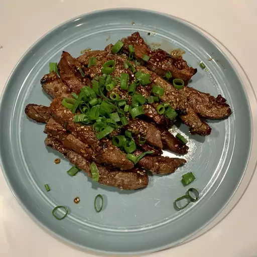

Bulgogi

Description
Bulgogi is a popular Korean dish that consists of thinly sliced beef marinated in a flavorful sauce and then grilled or stir-fried. The name "bulgogi" translates to "fire meat" or "barbecue meat" in Korean, reflecting its method of preparation.
Ingredients
- Thinly sliced beef (such as sirloin, ribeye, or tenderloin)
- Soy sauce
- Sesame oil
- Garlic cloves (minced)
- Ginger (grated or minced)
- Sugar or honey
- Pear or apple (pureed or grated, optional)
- Green onions (sliced)
- Sesame seeds (toasted)
- Ground black pepper
Steps
- Prepare the marinade by combining soy sauce, sesame oil, minced garlic, grated ginger, sugar or honey, optional pear or apple puree/grated, sliced green onions, toasted sesame seeds, and ground black pepper in a bowl.
- Thinly slice the beef against the grain into bite-sized pieces.
- Place the sliced beef in a bowl or a resealable plastic bag.
- Pour the marinade over the beef, ensuring that all the pieces are well coated. If using a plastic bag, seal it tightly, removing as much air as possible.
- Marinate the beef in the refrigerator for at least 1 hour, or preferably overnight, to allow the flavors to meld and the beef to absorb the marinade.
- Preheat a grill, grill pan, or skillet over medium-high heat.
- Remove the beef from the marinade, shaking off any excess liquid.
- Grill or stir-fry the beef for a few minutes on each side until it is cooked to your desired level of doneness and has a slightly charred or caramelized exterior.
- Transfer the cooked bulgogi to a serving plate or dish.
- Garnish with additional sliced green onions and toasted sesame seeds, if desired.
- Serve hot with steamed rice, lettuce leaves for wrapping, and various banchan (side dishes).